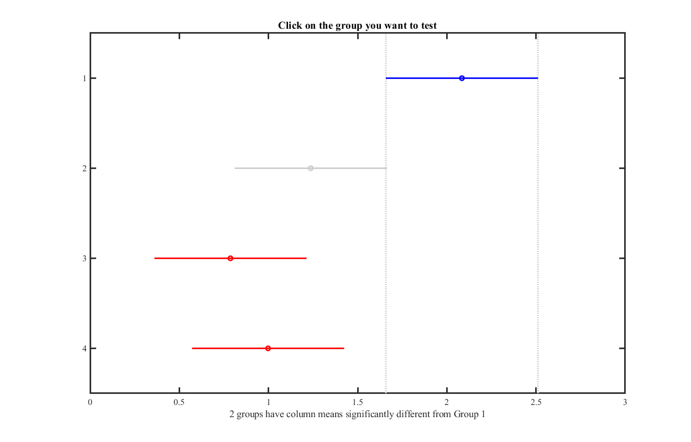

Contents
Data analysis
clear all load('DATA\SequenceLearningData.mat')
responsive MU: Significant response to first stim
p values from T-test comparing BL to mean response to stim 1
figure;
hist(p1, 0:0.01:max(p1))
line([0.05 0.05], [0 20], 'Color', 'red')
title('p-val for responsive MU')
box off
nMUs = sum(responsiveMU); %replications
disp(['Number of collected MU = ' num2str(length(responsiveMU))])
disp(['Number of responsive MU = ' num2str(nMUs)])
Number of collected MU = 187 Number of responsive MU = 68
Prepare data table for ANOVA/mixed effects
DATA = [meanSEQ(responsiveMU,:); meanRAN(responsiveMU,:);meanCON(responsiveMU,:)];
responses = reshape(DATA, [],1);
% Each column represents 1 stimulus of the set, Each row is 1 MU that has shown a
% significant response to the first stimulus (ttest)
groups = repmat(categorical(cellstr([repmat('SEQ', nMUs,1); repmat('RAN', nMUs,1);repmat('CON', nMUs,1)])),4,1);
stim = categorical( cellstr( [ repmat('stim1', 3*nMUs,1); repmat('stim2', 3*nMUs,1); ...
repmat('stim3', 3*nMUs,1); repmat('stim4', 3*nMUs,1) ] )) ;
MU = repmat(MUidx.MU(responsiveMU) , 3*4,1);
Tbl = table(groups, stim, responses, MU);
Random mixed effects model
lme = fitlme(Tbl, 'responses ~ -1 + groups*stim + (-1 + groups*stim|MU) ') anova(lme) % lm = fitlm(Tbl, 'responses ~ -1 + groups*stim*MU' )
lme =
Linear mixed-effects model fit by ML
Model information:
Number of observations 816
Fixed effects coefficients 11
Random effects coefficients 748
Covariance parameters 67
Formula:
responses ~ groups*stim + (groups*stim | MU)
Model fit statistics:
AIC BIC LogLikelihood Deviance
3905.1 4272 -1874.5 3749.1
Fixed effects coefficients (95% CIs):
Name Estimate SE tStat DF
'groups_RAN' 2.0893 0.39966 5.2277 805
'groups_SEQ' 2.0537 0.48908 4.1992 805
'stim_stim2' 1.3813 0.53261 2.5935 805
'stim_stim3' 0.83231 0.45225 1.8404 805
'stim_stim4' 0.94071 0.44367 2.1203 805
'groups_RAN:stim_stim2' -1.9358 0.6281 -3.082 805
'groups_SEQ:stim_stim2' -2.6405 0.66512 -3.97 805
'groups_RAN:stim_stim3' -1.6832 0.58719 -2.8665 805
'groups_SEQ:stim_stim3' -2.5965 0.67285 -3.859 805
'groups_RAN:stim_stim4' -1.6797 0.58405 -2.876 805
'groups_SEQ:stim_stim4' -2.2923 0.64229 -3.569 805
pValue Lower Upper
2.1889e-07 1.3048 2.8738
2.9778e-05 1.0937 3.0138
0.0096737 0.33585 2.4268
0.066081 -0.05542 1.72
0.034286 0.069828 1.8116
0.0021262 -3.1687 -0.7029
7.83e-05 -3.9461 -1.3349
0.0042589 -2.8358 -0.53056
0.00012298 -3.9173 -1.2758
0.0041341 -2.8262 -0.53328
0.00037957 -3.5531 -1.0316
Random effects covariance parameters (95% CIs):
Group: MU (68 Levels)
Name1 Name2 Type
'groups_RAN' 'groups_RAN' 'std'
'groups_SEQ' 'groups_RAN' 'corr'
'stim_stim2' 'groups_RAN' 'corr'
'stim_stim3' 'groups_RAN' 'corr'
'stim_stim4' 'groups_RAN' 'corr'
'groups_RAN:stim_stim2' 'groups_RAN' 'corr'
'groups_SEQ:stim_stim2' 'groups_RAN' 'corr'
'groups_RAN:stim_stim3' 'groups_RAN' 'corr'
'groups_SEQ:stim_stim3' 'groups_RAN' 'corr'
'groups_RAN:stim_stim4' 'groups_RAN' 'corr'
'groups_SEQ:stim_stim4' 'groups_RAN' 'corr'
'groups_SEQ' 'groups_SEQ' 'std'
'stim_stim2' 'groups_SEQ' 'corr'
'stim_stim3' 'groups_SEQ' 'corr'
'stim_stim4' 'groups_SEQ' 'corr'
'groups_RAN:stim_stim2' 'groups_SEQ' 'corr'
'groups_SEQ:stim_stim2' 'groups_SEQ' 'corr'
'groups_RAN:stim_stim3' 'groups_SEQ' 'corr'
'groups_SEQ:stim_stim3' 'groups_SEQ' 'corr'
'groups_RAN:stim_stim4' 'groups_SEQ' 'corr'
'groups_SEQ:stim_stim4' 'groups_SEQ' 'corr'
'stim_stim2' 'stim_stim2' 'std'
'stim_stim3' 'stim_stim2' 'corr'
'stim_stim4' 'stim_stim2' 'corr'
'groups_RAN:stim_stim2' 'stim_stim2' 'corr'
'groups_SEQ:stim_stim2' 'stim_stim2' 'corr'
'groups_RAN:stim_stim3' 'stim_stim2' 'corr'
'groups_SEQ:stim_stim3' 'stim_stim2' 'corr'
'groups_RAN:stim_stim4' 'stim_stim2' 'corr'
'groups_SEQ:stim_stim4' 'stim_stim2' 'corr'
'stim_stim3' 'stim_stim3' 'std'
'stim_stim4' 'stim_stim3' 'corr'
'groups_RAN:stim_stim2' 'stim_stim3' 'corr'
'groups_SEQ:stim_stim2' 'stim_stim3' 'corr'
'groups_RAN:stim_stim3' 'stim_stim3' 'corr'
'groups_SEQ:stim_stim3' 'stim_stim3' 'corr'
'groups_RAN:stim_stim4' 'stim_stim3' 'corr'
'groups_SEQ:stim_stim4' 'stim_stim3' 'corr'
'stim_stim4' 'stim_stim4' 'std'
'groups_RAN:stim_stim2' 'stim_stim4' 'corr'
'groups_SEQ:stim_stim2' 'stim_stim4' 'corr'
'groups_RAN:stim_stim3' 'stim_stim4' 'corr'
'groups_SEQ:stim_stim3' 'stim_stim4' 'corr'
'groups_RAN:stim_stim4' 'stim_stim4' 'corr'
'groups_SEQ:stim_stim4' 'stim_stim4' 'corr'
'groups_RAN:stim_stim2' 'groups_RAN:stim_stim2' 'std'
'groups_SEQ:stim_stim2' 'groups_RAN:stim_stim2' 'corr'
'groups_RAN:stim_stim3' 'groups_RAN:stim_stim2' 'corr'
'groups_SEQ:stim_stim3' 'groups_RAN:stim_stim2' 'corr'
'groups_RAN:stim_stim4' 'groups_RAN:stim_stim2' 'corr'
'groups_SEQ:stim_stim4' 'groups_RAN:stim_stim2' 'corr'
'groups_SEQ:stim_stim2' 'groups_SEQ:stim_stim2' 'std'
'groups_RAN:stim_stim3' 'groups_SEQ:stim_stim2' 'corr'
'groups_SEQ:stim_stim3' 'groups_SEQ:stim_stim2' 'corr'
'groups_RAN:stim_stim4' 'groups_SEQ:stim_stim2' 'corr'
'groups_SEQ:stim_stim4' 'groups_SEQ:stim_stim2' 'corr'
'groups_RAN:stim_stim3' 'groups_RAN:stim_stim3' 'std'
'groups_SEQ:stim_stim3' 'groups_RAN:stim_stim3' 'corr'
'groups_RAN:stim_stim4' 'groups_RAN:stim_stim3' 'corr'
'groups_SEQ:stim_stim4' 'groups_RAN:stim_stim3' 'corr'
'groups_SEQ:stim_stim3' 'groups_SEQ:stim_stim3' 'std'
'groups_RAN:stim_stim4' 'groups_SEQ:stim_stim3' 'corr'
'groups_SEQ:stim_stim4' 'groups_SEQ:stim_stim3' 'corr'
'groups_RAN:stim_stim4' 'groups_RAN:stim_stim4' 'std'
'groups_SEQ:stim_stim4' 'groups_RAN:stim_stim4' 'corr'
'groups_SEQ:stim_stim4' 'groups_SEQ:stim_stim4' 'std'
Estimate Lower Upper
2.7277 2.2991 3.2362
0.736 0.73537 0.73662
0.57107 0.5709 0.57125
0.44738 0.4469 0.44785
0.51446 NaN NaN
-0.59037 NaN NaN
-0.69744 -0.6978 -0.69708
-0.58589 -0.58706 -0.58472
-0.76386 -0.76439 -0.76332
-0.62498 -0.62521 -0.62474
-0.73758 NaN NaN
3.5839 3.088 4.1595
0.047314 0.046691 0.047937
-0.10855 NaN NaN
-0.032865 -0.033066 -0.032663
-0.02738 -0.02794 -0.026819
-0.20534 -0.20596 -0.20473
-0.017286 -0.017838 -0.016735
-0.31655 -0.31708 -0.31603
-0.05397 -0.054382 -0.053558
-0.28587 NaN NaN
3.9836 3.3372 4.7552
0.98574 0.98568 0.9858
0.99412 0.99409 0.99415
-0.97632 -0.97642 -0.97622
-0.94441 NaN NaN
-0.98099 -0.98111 -0.98087
-0.94183 -0.94203 -0.94164
-0.98319 -0.98329 -0.98309
-0.94273 NaN NaN
3.2384 2.6976 3.8876
0.99685 0.99684 0.99687
-0.95223 -0.95236 -0.95211
-0.88774 -0.88777 -0.8877
-0.96025 -0.96032 -0.96019
-0.87367 NaN NaN
-0.95888 -0.95902 -0.95874
-0.87697 NaN NaN
3.1566 2.6097 3.8182
-0.95971 -0.95976 -0.95965
-0.90762 -0.9078 -0.90743
-0.96726 -0.96735 -0.96716
-0.90213 -0.90229 -0.90197
-0.96964 -0.96977 -0.96952
-0.9025 -0.90259 -0.90241
4.0698 3.3111 5.0025
0.97997 0.97992 0.98002
0.99952 0.99951 0.99953
0.95649 0.95645 0.95653
0.99686 0.99683 0.99689
0.9639 0.96384 0.96395
4.4518 3.5813 5.5339
0.97513 0.97503 0.97523
0.98973 0.98967 0.98978
0.97555 0.97545 0.97565
0.99491 0.99484 0.99497
3.6308 2.9306 4.4982
0.95294 0.95287 0.95301
0.99812 0.9981 0.99814
0.95953 NaN NaN
4.5302 3.7314 5.4999
0.96008 0.95998 0.96017
0.99867 0.99865 0.99868
3.5962 2.898 4.4627
0.96362 NaN NaN
4.2177 3.4138 5.211
Group: Error
Name Estimate Lower Upper
'Res Std' 1.8496 1.7465 1.9588
ans =
ANOVA MARGINAL TESTS: DFMETHOD = 'RESIDUAL'
Term FStat DF1 DF2 pValue
'groups' 14.991 2 805 4.0549e-07
'stim' 2.2936 3 805 0.076639
'groups:stim' 2.9229 6 805 0.0079447
2way ANOVA for responsive MUs
[p,AOV,stats] = anova2(DATA, nMUs )
% Effect of stimulus, but not of group, also no interaction
c1 = multcompare(stats, 'Display', 'on', 'Estimate', 'row')
c2 = multcompare(stats, 'Display', 'on', 'Estimate', 'column')
% stim1 is significantly larger tah stim2-4
p =
0.0005675 0.11628 0.95354
AOV =
6×6 cell array
Columns 1 through 5
{'Source' } {'SS' } {'df' } {'MS' } {'F' }
{'Columns' } {[198.32]} {[ 3]} {[ 66.107]} {[ 5.881]}
{'Rows' } {[48.504]} {[ 2]} {[ 24.252]} {[ 2.1575]}
{'Interaction'} {[17.807]} {[ 6]} {[ 2.9679]} {[ 0.26403]}
{'Error' } {[9037.5]} {[804]} {[ 11.241]} {0×0 double}
{'Total' } {[9302.2]} {[815]} {0×0 double} {0×0 double}
Column 6
{'Prob>F' }
{[0.0005675]}
{[ 0.11628]}
{[ 0.95354]}
{0×0 double }
{0×0 double }
stats =
struct with fields:
source: 'anova2'
sigmasq: 11.241
colmeans: [2.0846 1.2369 0.78676 0.9977]
coln: 204
rowmeans: [0.95999 1.5532 1.3163]
rown: 272
inter: 1
pval: 0.95354
df: 804
Note: Your model includes an interaction term. A test of main effects can be
difficult to interpret when the model includes interactions.
c1 =
1 2 -1.267 -0.59321 0.080589 0.097555
1 3 -1.0301 -0.35629 0.31751 0.42996
2 3 -0.43688 0.23692 0.91072 0.68805
Note: Your model includes an interaction term. A test of main effects can be
difficult to interpret when the model includes interactions.
c2 =
1 2 -0.0051318 0.84771 1.7005 0.052088
1 3 0.44499 1.2978 2.1507 0.00053597
1 4 0.23406 1.0869 1.9397 0.0058426
2 3 -0.40271 0.45013 1.303 0.52719
2 4 -0.61365 0.23919 1.092 0.88897
3 4 -1.0638 -0.21094 0.6419 0.92061
